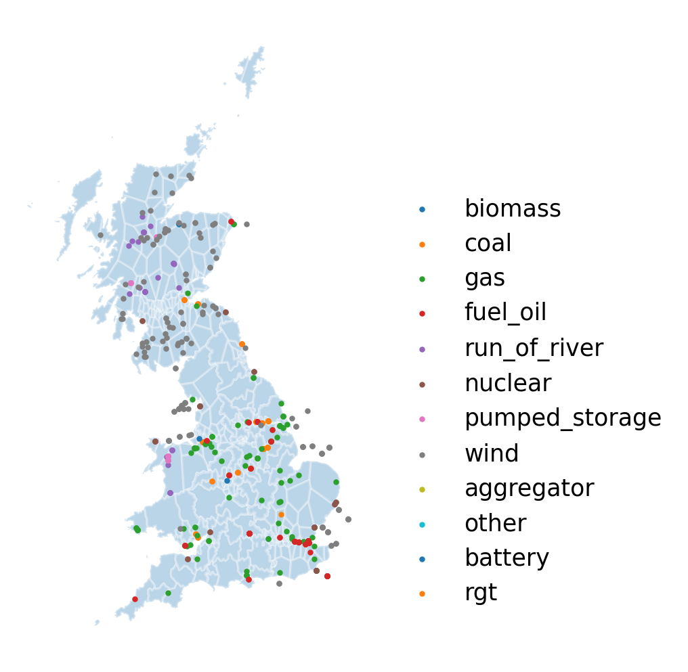
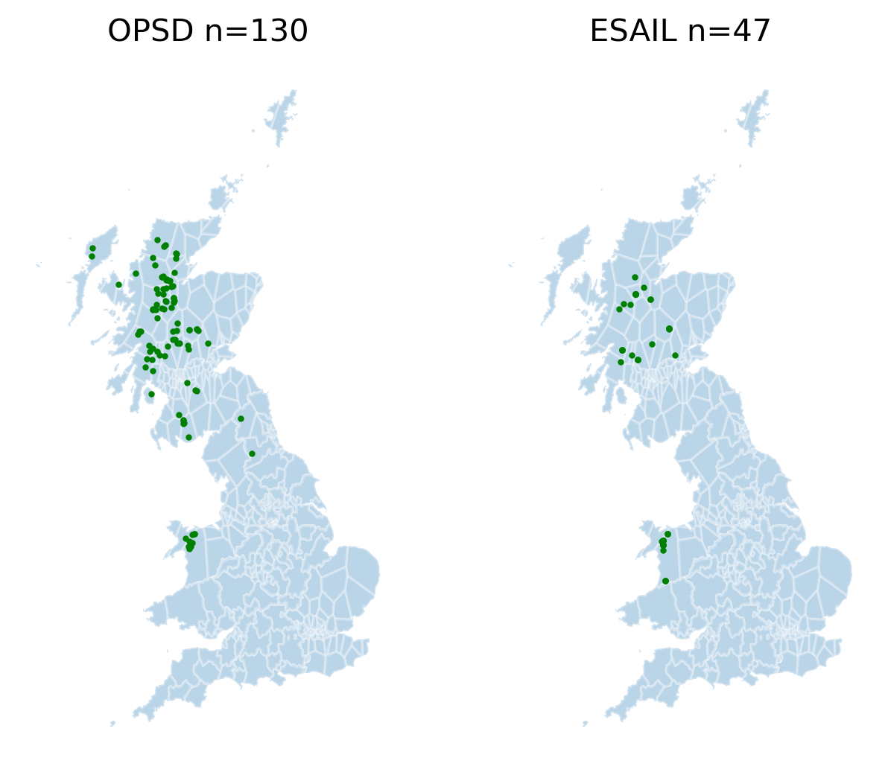

Downloading & Exploring the Input Data¶
#exports
import pandas as pd
import numpy as np
import requests
from bs4 import BeautifulSoup as bs
import geopandas as gpd
import matplotlib.pyplot as plt
import FEAutils as hlp
from IPython.display import JSON
from ipypb import track
ESAIL Dataset¶
This dataset was initially developed by Patrick De Mars and Connor Galbraith, then updated and extended by Ayrton Bourn, all of whom were historically or are currently in the Energy Systems & AI Lab at UCL.
Currently this dataset is missing key information such as the EIC code, capacity, and owners.
df_ESAIL = pd.read_csv('../data/raw/ESAIL.csv')
df_ESAIL.head()
| sett_bmu_id | ngc_bmu_id | bmu_root | name | primary_fuel_type | detailed_fuel_type | longitude | latitude | common_name | |
|---|---|---|---|---|---|---|---|---|---|
| 0 | E_MARK-1 | MARK-1 | MARK | Rothes Bio-Plant CHP 1 | biomass | bone | -3.60352 | 57.4804 | Rothes Bio-Plant CHP |
| 1 | E_MARK-2 | MARK-2 | MARK | Rothes Bio-Plant CHP 2 | biomass | bone | -3.60352 | 57.4804 | Rothes Bio-Plant CHP |
| 2 | T_DIDC1 | DIDC1 | DIDC | Didcot A (G) 1 | coal | coalgas_opt_out | -1.26757 | 51.6236 | Didcot A (G) |
| 3 | T_DIDC2 | DIDC2 | DIDC | Didcot A (G) 2 | coal | coalgas_opt_out | -1.26757 | 51.6236 | Didcot A (G) |
| 4 | T_DIDC4 | DIDC4 | DIDC | Didcot A (G) 4 | coal | coalgas_opt_out | -1.26757 | 51.6236 | Didcot A (G) |
We can see how many entries we have
df_ESAIL.shape[0]
493
We can use value_counts to identify the most common fuel types, we can see that most of the plants are wind farms.
df_ESAIL['primary_fuel_type'].value_counts()
wind 147
gas 94
coal 74
fuel_oil 60
nuclear 34
run_of_river 31
aggregator 16
pumped_storage 16
other 8
rgt 7
biomass 3
battery 3
Name: primary_fuel_type, dtype: int64
We'll quickly calculate the average number of BMU ids per location
avg_num_BMUs_per_loc = df_ESAIL['sett_bmu_id'].nunique()/df_ESAIL['bmu_root'].nunique()
print(f'The average number of BMU ids per location is {avg_num_BMUs_per_loc:.2f}')
The average number of BMU ids per location is 1.70
Its always useful to visualise this kind of data spatially so we'll load in a basemap with separate zones for each grid supply point
gdf_GSP_locs = gpd.read_file('../data/raw/GSP_shapefile/GSP_regions_20181031.shp')
gdf_GSP_locs.head()
| RegionID | RegionName | geometry | |
|---|---|---|---|
| 0 | 149 | Beddington (_J) | POLYGON ((543750.561 167428.882, 549430.486 13... |
| 1 | 150 | Northfleet East | POLYGON ((571652.936 143992.711, 550968.129 13... |
| 2 | 155 | Sellindge | POLYGON ((624923.598 137169.470, 624894.947 13... |
| 3 | 160 | Richborough | POLYGON ((626375.397 137910.687, 623652.026 16... |
| 4 | 156 | Chessington | POLYGON ((523319.962 166572.557, 526121.634 14... |
We'll then overlay this with the power plant locations.
We can see trends such as run of river hydro in Scotland, as well as nuclear concentrated around the coast where there's easy access to cooling water. It also raises some potential errors, e.g. the fuel oil plant that is shown off the coast.
fuel_types = df_ESAIL['primary_fuel_type'].unique()
## Plotting
fig, ax = plt.subplots(figsize=(3, 5), dpi=250)
gdf_GSP_locs.to_crs('EPSG:4326').plot(ax=ax, alpha=0.3, edgecolor='w')
for fuel_type in fuel_types:
df_fuel_specific = df_ESAIL[df_ESAIL['primary_fuel_type']==fuel_type]
ax.scatter(df_fuel_specific['longitude'], df_fuel_specific['latitude'], s=2, alpha=1, label=fuel_type)
hlp.hide_spines(ax, positions=['top', 'bottom', 'left', 'right'])
ax.set_xticks([])
ax.set_yticks([])
ax.set_xlim(-9, 3)
ax.legend(frameon=False, bbox_to_anchor=(1, 0.75))
<matplotlib.legend.Legend at 0x241a1eca4c0>

Open Power System Data Dataset¶
We want to make sure that we're always downloading the latest available dataset from OPSD so we'll identify which csv that is from their website
#exports
def retrieve_opsd_power_plants_page(opsd_root='https://data.open-power-system-data.org'):
page_url = f'{opsd_root}/conventional_power_plants/2020-10-01'
r = requests.get(page_url)
return r
r = retrieve_opsd_power_plants_page()
r
<Response [200]>
From this we can search for the csv and then extract the url that it refers to using BeautifulSoup
#exports
def extract_EU_power_plants_csv_url(r, opsd_root='https://data.open-power-system-data.org'):
soup = bs(r.content)
csv_url = opsd_root + '/' + soup.find('a', string='conventional_power_plants_EU.csv')['href']
return csv_url
csv_url = extract_EU_power_plants_csv_url(r)
release_date = csv_url.split('/')[-2]
release_date
'2020-10-01'
We can now use pandas to load this directly into a dataframe
df_OPSD = pd.read_csv(csv_url)
df_OPSD.head()
| name | company | street | postcode | city | country | capacity | energy_source | technology | chp | ... | type | lat | lon | eic_code | energy_source_level_1 | energy_source_level_2 | energy_source_level_3 | additional_info | comment | source | |
|---|---|---|---|---|---|---|---|---|---|---|---|---|---|---|---|---|---|---|---|---|---|
| 0 | Marcinelle Energie (Carsid) | DIRECT ENERGIE | nan | nan | nan | BE | 413 | Natural gas | Combined cycle | nan | ... | nan | 50.414 | 4.40645 | 22WMARCIN000179H | Fossil fuels | Natural gas | nan | nan | nan | https://www.elia.be/en/grid-data/power-generat... |
| 1 | Aalst Syral GT | Electrabel | nan | nan | nan | BE | 43 | Natural gas | Gas turbine | Yes | ... | CHP/IPP | nan | nan | nan | Fossil fuels | Natural gas | nan | nan | nan | https://www.elia.be/en/grid-data/power-generat... |
| 2 | Aalst Syral ST | Electrabel | nan | nan | nan | BE | 5 | Natural gas | Steam turbine | Yes | ... | CHP/IPP | nan | nan | nan | Fossil fuels | Natural gas | nan | nan | nan | https://www.elia.be/en/grid-data/power-generat... |
| 3 | AALTER TJ | Electrabel | nan | nan | nan | BE | 18 | Oil | Gas turbine | nan | ... | nan | nan | nan | nan | Fossil fuels | Oil | nan | nan | nan | https://www.elia.be/en/grid-data/power-generat... |
| 4 | Amercoeur 1 R TGV | Electrabel | nan | nan | nan | BE | 451 | Natural gas | Combined cycle | nan | ... | nan | 50.43 | 4.39518 | 22WAMERCO000010Y | Fossil fuels | Natural gas | nan | nan | nan | https://www.elia.be/en/grid-data/power-generat... |
We'll save this to our raw data directory before continuing
df_OPSD.to_csv('../data/raw/OPSD.csv', index=False)
We'll also wrap all of these steps in a single function
#exports
def download_opsd_power_plants_data(raw_data_dir='../data/raw'):
r = retrieve_opsd_power_plants_page()
csv_url = extract_EU_power_plants_csv_url(r)
df_OPSD = pd.read_csv(csv_url)
df_OPSD.to_csv(f'{raw_data_dir}/OPSD.csv', index=False)
download_opsd_power_plants_data()
We can see that there's roughly half the number of entries in the OPSD database for UK plants. However, its worth remembering that were ~2 entries per physcial location in the ESAIL dataset due to some plants having multiple BM units.
df_OPSD_UK = df_OPSD.query('country=="UK"')
df_OPSD_UK.shape[0]
244
Inspecting the break-down by fuel-type we start to see a slightly different picture though, where hydro takes the top spot and wind is no-where to be seen
df_OPSD_UK['energy_source'].value_counts()
Hydro 130
Natural gas 48
Mixed fossil fuels 26
Non-renewable waste 13
Biomass and biogas 12
Nuclear 8
Hard coal 7
Name: energy_source, dtype: int64
Visualising this difference for just the Hydro plants shows us that the OPSD dataset has far more granular information on some of the smaller run-of-river hydro plants in Scotland, however they do miss some run-of-river such as Rheidol in Wales.
df_OPSD_UK_hydro = df_OPSD_UK.query('energy_source=="Hydro"')
df_ESAIL_hydro = df_ESAIL.query('primary_fuel_type=="run_of_river" | primary_fuel_type=="pumped_storage"')
# Plotting
fig, axs = plt.subplots(figsize=(6, 5), dpi=250, ncols=2)
ax = axs[0]
ax.set_title(f'OPSD n={df_OPSD_UK_hydro.shape[0]}')
gdf_GSP_locs.to_crs('EPSG:4326').plot(ax=ax, alpha=0.3, edgecolor='w')
ax.scatter(df_OPSD_UK_hydro['lon'], df_OPSD_UK_hydro['lat'], s=2, alpha=1, color='green')
ax = axs[1]
ax.set_title(f'ESAIL n={df_ESAIL_hydro.shape[0]}')
gdf_GSP_locs.to_crs('EPSG:4326').plot(ax=ax, alpha=0.3, edgecolor='w')
ax.scatter(df_ESAIL_hydro['longitude'], df_ESAIL_hydro['latitude'], s=2, alpha=1, color='green')
for ax in axs:
hlp.hide_spines(ax, positions=['top', 'bottom', 'left', 'right'])
ax.set_xticks([])
ax.set_yticks([])

We'll also look at the detail to which they go in for energy sources
df_OPSD[['energy_source_level_1', 'energy_source_level_2', 'energy_source_level_3']].drop_duplicates()
| energy_source_level_1 | energy_source_level_2 | energy_source_level_3 | |
|---|---|---|---|
| 0 | Fossil fuels | Natural gas | nan |
| 3 | Fossil fuels | Oil | nan |
| 5 | Renewable energy | Bioenergy | Biomass and biogas |
| 8 | Renewable energy | Hydro | nan |
| 12 | Nuclear | nan | nan |
| 25 | Fossil fuels | Non-renewable waste | nan |
| 53 | Fossil fuels | Mixed fossil fuels | nan |
| 93 | Fossil fuels | Hard coal | nan |
| 109 | Other or unspecified energy sources | nan | nan |
| 313 | Fossil fuels | Lignite | nan |
| 538 | Renewable energy | Bioenergy | nan |
| 1430 | Fossil fuels | Other fossil fuels | nan |
| 4792 | nan | nan | nan |
| 5962 | Other | Other fuels | nan |
| 6008 | Other or unspecified energy sources | Waste | nan |
OPSD Dataset¶
The Open Power System Data (OPSD) group started in 2015 with the aim of providing open source datasets that could support the work of the Open Energy Modelling Initiative, as part of this they've produced a data package listing conventional power plants in Germany and European countries (thankfully the current phase of the OPSD project finishes at the end of December 2020 rather than January 2021).
# should match on the name, then get the capacity, commission_year and EIC code attributes